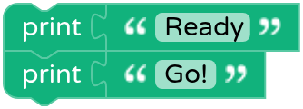
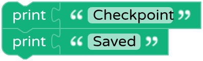

Course home · Lesson 1
From blocks to GDScript
Learning objective. Read, write, and fix short GDScript programs. Explain what order statements run in and what comments and indentation do.
Read the same program in two forms
Blockly

GDScript
print("Ready")
# Start the round
print("Go!")- Computer science. A statement is an instruction. In this sequence, statements run from top to bottom.
- GDScript. Syntax means the rules for writing code.
print("Ready")uses parentheses around what to print and quotes around the text. A line starting with#is a comment for the reader. GDScript skips it. - Godot.
print()writes to the Output panel. It helps you check when something happens in a game.
Predict and match
Read the GDScript above. Write the exact lines you expect to see in Output, in order.
Check the prediction
Ready Go!
Both print statements run. The comment produces no output.
Which GDScript example matches this screenshot? Use the order of the statements to explain your choice.

Example A
print("Saved")
print("Checkpoint")Example B
print("Checkpoint")
print("Saved")Check the match
B. The first statement prints Checkpoint and the second prints Saved.
Guided task · Complete the code
Add a print() statement below the comment. Run the code. Your goal is two lines in this order.
Level loaded Go!
print("Level loaded")
# Add your second statement belowDebugging task · Fix the indentation
Run the code as written and read the error. The line ending in : opens a group of statements. Here if true: means the group will run. Add four spaces before the second line so it belongs to that group. The goal is one line of output, Door open.
if true:
print("Door open")Independent task · Write a game log
Write three print() statements for events in a game of your choice. Put a comment above the middle statement that explains why that event matters. Run your program and compare the output with what you expected.
# Write your game log belowSuccess criteria. Your program runs without errors, prints exactly three messages in the order you planned, and skips the comment. You can explain why the debugging task needed indentation.
Apply it to your project
Choose a scene in your own Godot game. In its _ready() function, add a short comment and a print() message that names the scene. Run the scene and check that your message appears in Godot’s Output panel. Godot editor setup
See an example Godot script
For a new script attached to a plain Node, this prints Training room loaded when the scene starts. If your scene already has a script, add just the indented lines to its _ready() function, or create that function if it is missing.
extends Node
func _ready():
# Confirm that this scene has loaded.
print("Training room loaded")Optional extension
Move one of your three print() statements to the top. Predict how the output will change, then run it. Next, put # before that statement and check what happens.
Reflection
How would you explain to a classmate why changing the order of print() statements changes the output, while moving a comment does not?